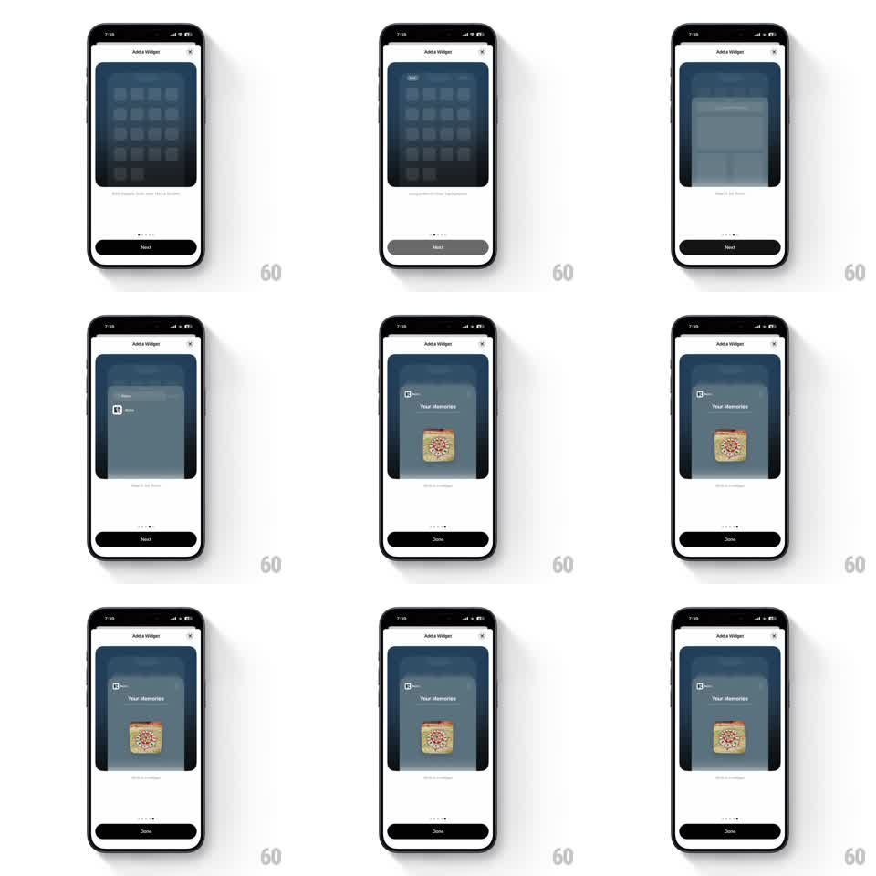

Media
Frame-by-frame

Rebuild this animation 1:1: Retro's add-widget tutorial - a simulated iOS walkthrough inside an "Add a Widget" sheet that steps through long-pressing the home screen, entering jiggle mode, opening the widget gallery, and dropping the Retro "Your Memories" widget, page dots tracking each step.

Rebuild this animation 1:1: Retro's add-widget tutorial - a simulated iOS walkthrough inside an "Add a Widget" sheet that steps through long-pressing the home screen, entering jiggle mode, opening the widget gallery, and dropping the Retro "Your Memories" widget, page dots tracking each step. ## Integration Integration: stack-agnostic spec - springs given as stiffness/damping, timed motions as duration + curve; map every value to your framework and animation library of choice. ## Scene White sheet: "Add a Widget" header with close (x), a large rounded preview window showing the simulated iOS home screen (dark wallpaper, app icon grid), a caption line, page dots, and a "Next"/"Done" button. The final step shows the Retro widget (polaroid-style photo tile with "Your Memories" label) placed on the simulated home screen. ## Motion spec Pattern: scripted multi-step simulation, ~8s total across 5 steps. - Long-press: a simulated touch ripple presses a home-screen icon (300ms hold), icons pop slightly (scale 1.05). - Jiggle mode: all icons start jiggling (rotation -2deg -> 2deg, 120ms alternate, random phase) and a small minus badge fades onto each. - Gallery: the simulated widget gallery slides up over the dimmed home screen (350ms, ease-out); the Retro widget tile scrolls into view. - Drop: the widget tile springs into its slot (scale 0.9 -> 1.03 -> 1, ~400ms, spring ~320/20), jiggle stops, and the home screen settles. - Chrome: page dots advance with each step (active dot stretches, 200ms); Next becomes Done on the last step (cross-fade 150ms). ## Calibration - Each simulated step holds long enough to read the caption (~1.2s) before advancing. - The jiggle loops seamlessly for as long as that step is displayed. ## Reduced motion Steps advance with 200ms cross-fades; no jiggle, ripples, or springs. ## Don't miss - The simulation lives inside the preview window - the sheet chrome itself never jiggles. - The Retro widget is a polaroid photo tile, not a generic gray box.